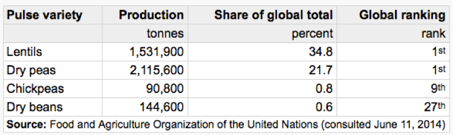

WELCOME TO PULSE PASSION
Choose pulses, be healthy
International Year of Pulses
About us
Vision
Through our evidence-based service we aim to increase Canadian consumer awareness on the role of food choices for the prevention of cardiovascular disease by facilitating more educated purchases at the grocery store.
Mission
Pulse Plus Foods is committed to providing Canadian consumers with value added food products focused on improving cardiovascular health through the utilization of pulses as a main ingredient. Our company aims to be environmentally and socially responsible while embracing creativity and innovation in our food products.
Values
To achieve our vision Pulse Plus Foods values; sustainability, cardiovascular wellbeing, education translation, high quality ingredients, and supporting Canadian agriculture.
Our team is based from the University of Guelph Human Health and Nutritional Science Graduate program.
Jillian Jaworski and Noha Mourad
Nathan Reymer

Undergraduate student at the university of Guelph studying Software Engineering
Read MoreMichael Underschultz

Graduate student at the University of Guelph completing my Masters of Science in Human Health and Nutritional Sciences
Read MoreMeaghan Kavanagh

Graduate student at the University of Guelph studying Human Health and Nutritional sciences.
Read MoreMyPulse

Pulse Passion provides this evidence-based service to increase Canadian consumer awareness on healthy food choices for the prevention of cardiovascular disease.

FOOD CHOICES MADE SIMPLE
To complement our product line, we have developed a powerful evidence based app called ‘MyPulse’ that assists YOU, the consumer make better food product choices at the grocery store. To work this powerful tool, simply download the app, launch it, and begin by entering the grocery item of interest. The app will load that food product and display its rating: green – consume often, yellow - consume sometimes, and red - limit consumption.

So, what’s behind the food product ratings? A novel and sophisticated algorithm was created to delegate green, yellow, and red ratings to food products in an unbiased, and scientific manner. Cardiovascular protective ingredients are considered good, and earn a product points while cardiovascular harmful products are bad, and subtract points from a product. The overall score determines the rating of that food product. Scientifically substantiated ‘good’ products include: omega-3, EPA&DHA, whole grains, vitamins and minerals such as potassium, magnesium, niacin, and folate, soy protein, phytosterols, fibre, psyllium fibre, ground flax and oats. Substantiated bad products include trans fat, saturated fat, added sugar and sodium.
Our Products
Chickpea and red lentil pizza dough
Whole Grain Wheat Flour, Lentil Flour, Chickpea Flour , Cayenne Infused Olive Oil, Sugar, Yeast, Salt
Red lentil crackers
Lentils, Whole Grain Wheat Flour, Egg, Flaxseed (Ground) , Canola Oil, Baking Powder , Salt, Baking Soda, Rosemary, Pepper, Turmeric
Green lentil muffins
Lentils, Skim Milk , Carrots, Brown Sugar, Whole Grain Wheat Flour, Egg, Canola Oil, Flaxseed (Ground) , Wheat Bran, Baking Powder , Baking Soda, Vanilla Extract, Cinnamon.
Chickpea shake and bake
Chickpea Flour , Garlic Powder, Cajun Spice, Paprika, Salt
Sustainability
Social (You and your family)
Pulse Passion products have health benefits, especially in the context of cardiovascular health. With the ever increasing number of individuals with risk factors for CVD and the abundance of pulses being grown in Canada, pulses may play a pivotal role in improving markers related to CVD in Canadians such as dyslipidemia and hyperglycemia (PHAC 2007). An observational study done in US men and women with an average 19 year follow-up, found that legume consumption (broader category of pulses) was associated with decreases in the risk of CHD and CVD (Lydia et al., 2001). To further strengthen the evidence supporting Pulses having a positive effect on CVD risk a recent systematic meta-analysis done using 26 randomized clinical trials found that a single serving a pulses everyday was found to significantly decrease LDL-cholesterol levels in participants (Ha et al., 2014).
Environment (The planet)
Pulse Passion products are environmentally friendly Pulses are not only produced widely in Canada but they are also environmentally friendly, being one of the most environmentally friendly sources of protein. Nitrogen fertilizer is one of the major sources of non-reusable energy in agriculture (Gan et al. 2011). Pulses are nitrogen fixing plants, which means they can take nitrogen from the air and therefore require less nitrogen fertilizer when compared to other crops. Also, when the pulse seeds are harvested the leftover pulse plant provides nitrogen into the ground for the next crop. When the crop is grown after using a nitrogen fixing plant (pulses) the total greenhouse gasses emitted is lowered by 20% compared to when the crop was preceded by a cereal crop (Gan et al. 2011). Overall growing pulses can significantly reduce the amount of total greenhouse gases produced from farming and therefore make pulses a very sustainable crop.
Economic (Canada)
Purchasing Pulse Passion products will help support Canada Pulses are a major crop in Canada and continue to rise, making up to 6% of field crops grown within Canada. In 2011, Canada was the number one country for the production of lentils and dry peas making up 34.8% and 21.7% of the global totals, refer to the chart below (Statistics Canada 2016).
Pulses contribution to global markets, 2011
{kind=link}
Pulse Passion Sustainability Goals
What we are doing now:
• Incorporate pulses to make up at least 30% of our products ingredients.
• Use packaging that is 100% recyclable
• Educating consumers about cardiovascular friendly food choices
What we hope to do in the future:
• Use ingredients from Canada that are primary transported by rail
• Only use products (wheat, canola, pulses) that are grown on farms that use crop rotation
• Increase responsible consumption among consumers through education